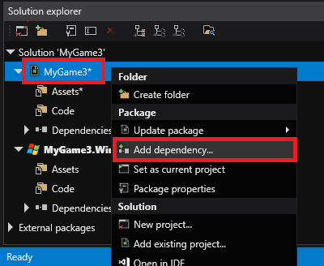
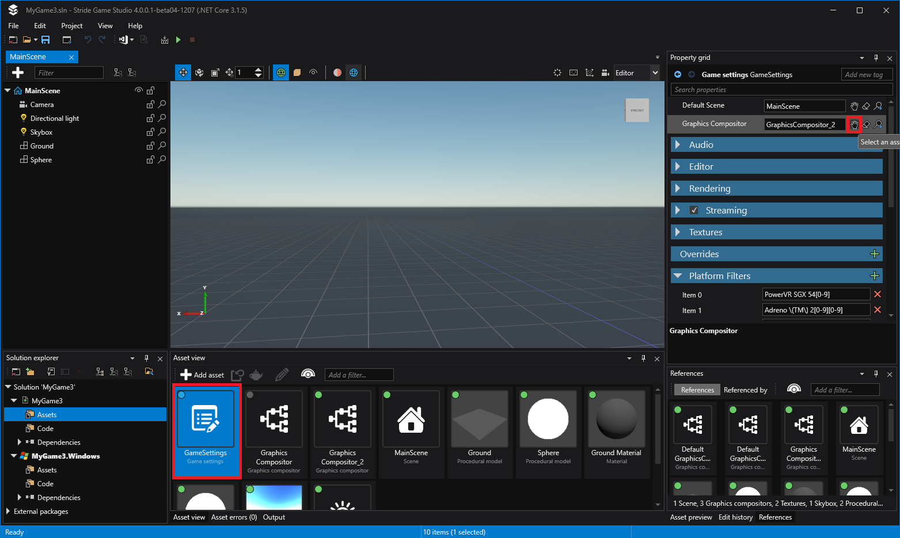
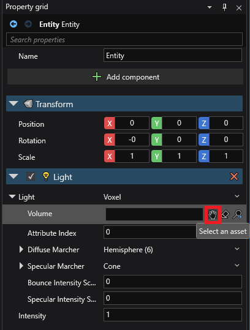

ボクセルコーントレーシング グローバルイルミネーション
Howto: 既存のプロジェクトにボクセルコーントレーシング GI を設定する
Stride.Voxels プラグインを追加する
Stride はモジュラーベースなので、Stride.Voxels プラグインへの参照を追加する必要があります。
ソリューションエクスプローラーでプロジェクトを右クリックします。
[Add dependency...] を選択します。

表示されるリストから
Stride.Voxelsを選択し、[OK] をクリックします。プロジェクトを再読み込みするかどうか聞かれることがありますが、どちらかを選んでください。どちらでも問題ありません。
グラフィックス コンポジター
ボクセルコーントレーシングを使うには、グラフィックスコンポジターをいくつか変更する必要があります。
これを簡単に行えるように、Voxel GI ですぐに使えるグラフィックコンポジターをアセットテンプレートに用意してあります。
アセットビューで、
 をクリックします。
をクリックします。検索フィールドに、
Voxelと入力します。Graphics Compositor (Voxel Cone Tracing) を選択します。

ゲームセッティングアセットで、Graphics Compositor を、新しく作成したグラフィックスコンポジターに変更します。

シーンをセットアップする：ボリュームとライト
シーンエクスプローラー で
 をクリックし、[Light] > [Voxel volume] を選択します。
をクリックし、[Light] > [Voxel volume] を選択します。もう一度
をクリックし、[Light] > [Voxel volume] を選択します。この時点では、ライトが正しく設定されていないためシーンのレンダリングが（
No Voxel Volume Component selected for voxel light.というエラーで）クラッシュすることがありますが、これは想定内です。プロパティグリッドで、Light の Volume プロパティを、先ほど作成したエンティティに変更します。

最後に、シーンレンダラーの [Resume] ボタンをクリックすれば、すべての設定が完了します。
遊んでみる
簡単なテストとして、スカイボックスライトを無効にして（ディレクショナルライトだけを残して）、シャドウエリアに行き、そこにアンビエントライトが広がるかどうかを確認してみてください。また、エミッシブ マテリアルを使用することもできます。
チュートリアルビデオ
これは、David Jeske 氏が YouTube に掲載したもう一つのチュートリアルです。セットアップの方法が説明されています。